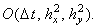
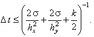
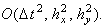

|
В заключение приведём сравнительную характеристику разностных схем,
аппроксимирующих двумерное дифференциальное уравнение параболического типа, не содержащее первых
производных по координатам x и y:
При записи разностных схем использованы обозначения (7.6).
1. Явная разностная схема
Имеет порядок аппроксимации 
Условно устойчива 
Решается с помощью рекуррентного соотношения (7.5).
2. Схема расщепления
Имеет порядок аппроксимации
Абсолютно устойчива.
Каждая подсхема решается с помощью метода прогонки.
3. Схема переменных направлений
Имеет порядок аппроксимации 
Абсолютно устойчива.
Каждая подсхема решается с помощью метода прогонки.
4. Схема со стабилизирующей поправкой
Имеет порядок аппроксимации
Абсолютно устойчива.
Каждая подсхема решается с помощью метода прогонки.
5. Схема предиктор-корректор
Имеет порядок аппроксимации
Абсолютно устойчива.
Каждая из подсхем предиктора решается с помощью метода прогонки; корректор
(третья подсхема) - с помощью рекуррентного соотношения (7.18).
|